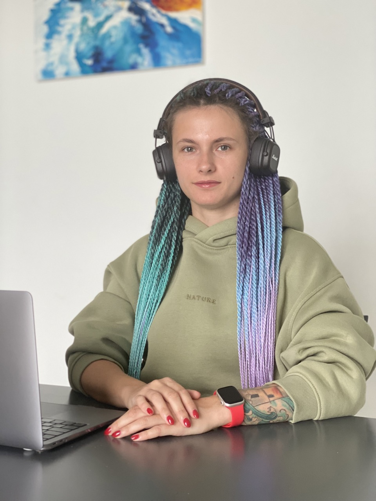

Серова Анна
Frontend разработчик
Обо мне
Frontend разработчик с более чем 2-летним опытом работы с Vue.js. Имею опыт работы в международных командах, обладаю отличными навыками командной работы и стремлением к постоянному профессиональному развитию.
Тренирую свои навыки на pet-проектах, где тестирую новые технологии и фреймворки.
Моё хобби – увлекаюсь азиатской культурой.
Связаться
Резюме в PDF формате
Скачать файлОпыт работы
Frontend разработчик, ООО Эврика
Декабрь 2022 - настоящее время
Южно-Сахалинск, Россия
- Разработка и поддержка веб-приложений с использованием Vue.js
- Интеграция с REST API
- Оптимизация производительности приложений
- Выстраивание и доработка процессов разработки в команде
- Коммуникация с заказчиком напрямую, уточнение и корректировки ТЗ
- Отслеживание и корректировка сроков разработки/релизов
- Разработка UI/UX
Frontend разработчик, BYSS Mobile
Март 2022 - Август 2022 (6 месяцев)
Щецин, Польша
- Разработка лендингов
- Поддержка веб-приложений с использованием Vue.js
Навыки
- Vue 3, Vue Router, Pinia, Composition API
- HTML5, CSS3, SASS
- Typescript
- JavaScript (ES6+)
- Git, GitHub
- Webpack
- REST API
- AR (Aframe.js)
- Leaflet, OpenWeatherMap
Дополнительно
- 2021 Стажировка HTML Academy (3 мес)
- Опыт работы ручным QA
Образование
- Курсы HTML Academy (1 год)
- Курсы Udemy
- СГАСУ (Самара)